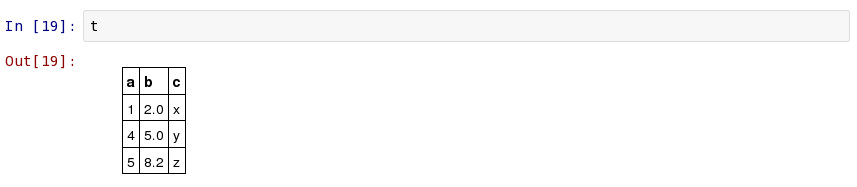
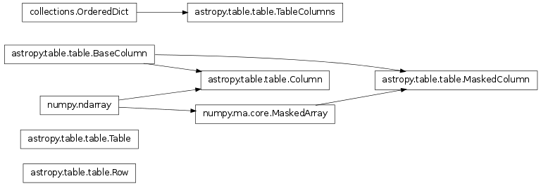

astropy.table provides functionality for storing and manipulating heterogenous tables of data in a way that is familiar to numpy users. A few notable features of this package are:
Currently astropy.table is used when reading an ASCII table using astropy.io.ascii. Future releases of AstroPy are expected to use the Table class for other subpackages such as astropy.io.votable and astropy.io.fits.
The basic workflow for creating a table, accessing table elements, and modifying the table is shown below. These examples show a very simple case, while the full astropy.table documentation is available from the Using table section.
First create a simple table with three columns of data named a, b, and c. These columns have integer, float, and string values respectively:
>>> from astropy.table import Table, Column
>>> a = [1, 4, 5]
>>> b = [2.0, 5.0, 8.2]
>>> c = ['x', 'y', 'z']
>>> t = Table([a, b, c], names=('a', 'b', 'c'), meta={'name': 'first table'})
There are a few ways to examine the table. You can get detailed information about the table values and column definitions as follows:
>>> t
<Table rows=3 names=('a','b','c')>
array([(1, 2.0, 'x'), (4, 5.0, 'y'), (5, 8.2, 'z')],
dtype=[('a', '<i8'), ('b', '<f8'), ('c', '|S1')])
From within the IPython notebook, the table is displayed as a formatted HTML table:
If you print the table (either from the noteboook or in a text console session) then a formatted version appears:
>>> print(t)
a b c
--- --- ---
1 2.0 x
4 5.0 y
5 8.2 z
For a long table you can scroll up and down through the table one page at time:
>>> t.more()
Now examine some high-level information about the table:
>>> t.colnames
['a', 'b', 'c']
>>> len(t)
3
>>> t.meta
{'name': 'first table'}
Access the data by column or row using familiar numpy structured array syntax:
>>> t['a'] # Column 'a'
<Column name='a' units=None format=None description=None>
array([1, 4, 5])
>>> t['a'][1] # Row 1 of column 'a'
4
>>> t[1] # Row obj for with row 1 values
<Row 1 of table
values=(4, 5.0, 'y')
dtype=[('a', '<i8'), ('b', '<f8'), ('c', '|S1')]>
>>> t[1]['a'] # Column 'a' of row 1
4
One can retreive a subset of a table by rows (using a slice) or columns (using column names), where the subset is returned as a new table:
>>> print(t[0:2]) # Table object with rows 0 and 1
a b c
--- --- ---
1 2.0 x
4 5.0 y
>>> t['a', 'c'] # Table with cols 'a', 'c'
a c
--- ---
1 x
4 y
5 z
Modifying table values in place is flexible and works as one would expect:
>>> t['a'] = [-1, -2, -3] # Set all column values
>>> t['a'][2] = 30 # Set row 2 of column 'a'
>>> t[1] = (8, 9.0, "W") # Set all row values
>>> t[1]['b'] = -9 # Set column 'b' of row 1
>>> t[0:2]['b'] = 100.0 # Set column 'c' of rows 0 and 1
>>> print(t)
a b c
--- ----- ---
-1 100.0 x
8 100.0 W
30 8.2 z
Add, remove, and rename columns with the following:
>>> t.add_column(Column(data=[1, 2, 3], name='d')))
>>> t.remove_column('c')
>>> t.rename_column('a', 'A')
>>> t.colnames
['A', 'b', 'd']
Adding a new row of data to the table is as follows:
>>> t.add_row([-8, -9, 10])
>>> len(t)
4
Lastly, one can create a table with support for missing values, for example by setting masked=True:
>>> t = Table([a, b, c], names=('a', 'b', 'c'), masked=True)
>>> t['a'].mask = [True, True, False]
>>> t
<Table rows=3 names=('a','b','c')>
masked_array(data = [(--, 2.0, 'x') (--, 5.0, 'y') (5, 8.2, 'z')],
mask = [(True, False, False) (True, False, False) (False, False, False)],
fill_value = (999999, 1e+20, 'N'),
dtype = [('a', '<i8'), ('b', '<f8'), ('c', '|S1')])
>>> print(t)
a b c
--- --- ---
-- 2.0 x
-- 5.0 y
5 8.2 z
The details of using astropy.table are provided in the following sections:
| Column | Define a data column for use in a Table object. |
| MaskedColumn | Define a masked data column for use in a Table object. |
| Row(table, index) | A class to represent one row of a Table object. |
| Table([data, masked, names, dtypes, meta, copy]) | A class to represent tables of heterogeneous data. |
| TableColumns([cols]) | OrderedDict subclass for a set of columns. |
